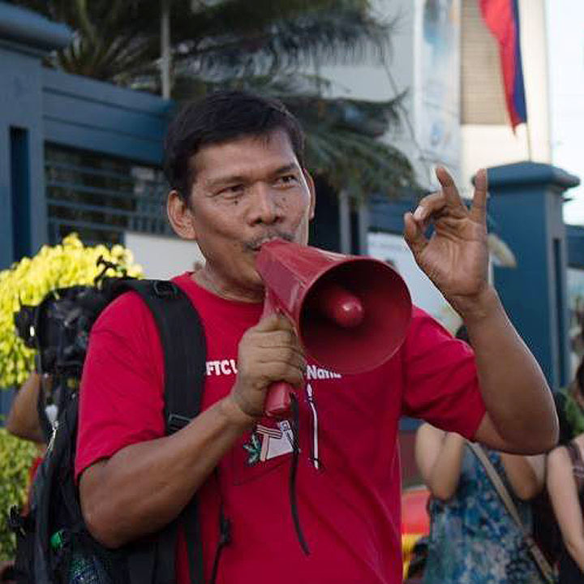

Leody de Guzman
Leodegario "Ka Leody" Quitain de Guzman | Labor leader, activist
General Information
- Former President and now Chairperson of Bukluran ng Manggagawang Pilipino
- Was an aspirant in the 2019 senatorial elections
- Ran for president under the Partido Lakas ng Masa for the 2022 Elections
History
- Bachelor of Science in Customs Administration degree in Philippine Maritime Institute
- Became an activist after the assassination of Benigno Aquino Jr.
- An organizer for Alyansa ng mga Manggagawa sa Pasig (ALMAPAS) from 1984-1990
- Co-founded a Davao City-based agricultural products manufacturer around 2002
- Elected deputy secretary general of Bukluran ng Manggagawang Pilipino (BMP) from 1993-1996, then president until 2018, and now chairman
- Currently part of the Board of Trustees of the non-governmental organization Bulig Visayas and PhilRights
- Country representative of International Council of the International Center for Labor Solidarity (ICLS), Vice President of Asia Regional Organization of Bank, Insurance and Finance Union (AROFIBU)
- Participated in the 2016 Congressional bid in the legislative race; did not win any seat
- Participated in the 2019 Senator bid; did not win any seat